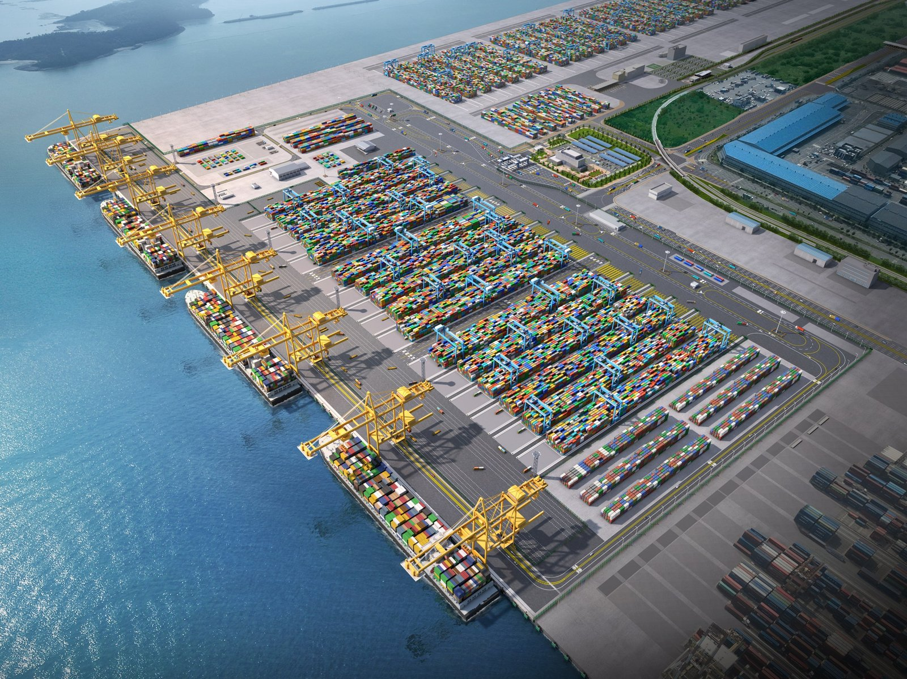
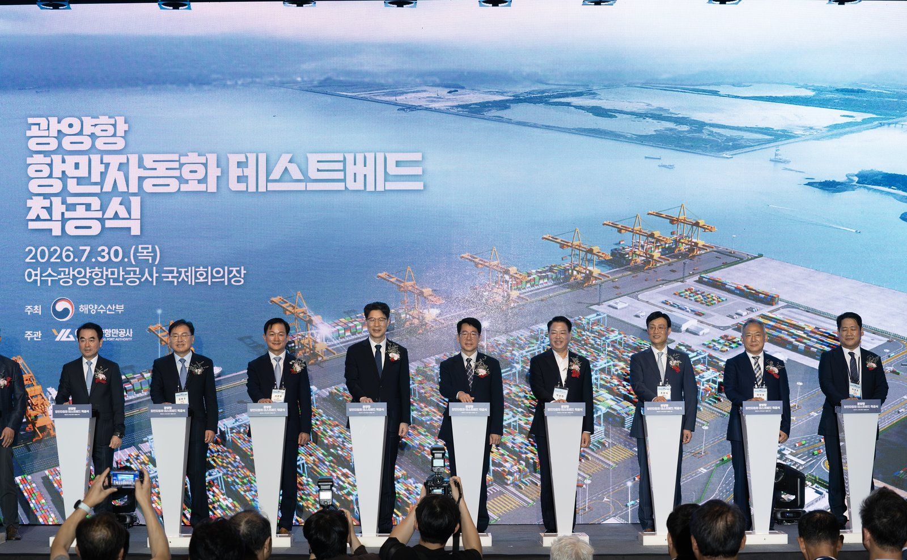
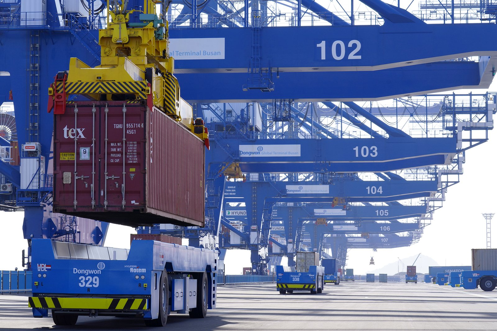

[해양 AI 융복합⑫] 실증·인증 한데 모을 광양 첨단항만기술원 구상, 2027년 타당성 검토 앞둔 입지 논쟁
한국판 뉴딜에서 나온 광양항 시험장, 테스트베드 사업 완료는 2026년에서 2029년으로
시험장은 광양, 운영 데이터는 부산, 송옥주 의원 부산 집적 검토 제기
AI경제저널=김갑봉 기자 | 해양수산부가 광양항에 항만장비 실증과 인증을 한곳에서 맡을 첨단항만기술원 설립을 검토한다. 송옥주 더불어민주당 의원은 부산항 중심 집적을 검토하자고 했다. 왜 시험과 인증을 한데 묶으려 하는지 사실로 짚는다.
이름 앞에 붙은 '가칭'
해양수산부는 2026년 7월 피지컬 AI 항만 전략을 내놨다. 피지컬 AI는 크레인 같은 실제 장비를 AI가 스스로 판단해 움직이게 하는 기술이다. 이 전략에 광양항 '(가칭)첨단항만기술원' 설립 검토가 들어 있다.
해수부 설명으로는 이 기관이 실제와 가상 항만 환경을 이어 데이터 수집과 기술 실증, 표준·성능 인증을 한곳에서 맡는다. 기술개발과 적용을 현장 가까이에서 돕는 것이 목표다.
실증은 새 기술을 실제 현장 조건에서 돌려 보는 일이다. 인증은 정해진 기준을 통과했다고 공인 기관이 확인해 주는 일이다.
해수부는 기관 설립 방식과 규모, 역할을 정하지 않았다. 2027년 타당성 검토로 이를 구체화할 계획이다.
기관 이름 앞에는 아직 '(가칭)'이 붙어 있다.
응답자 80%가 원한 신기술 인증
한국해양수산개발원(KMI) 김보경·한승훈·안승현 연구진은 2023년 학술대회 논문 서론에서 국내 항만장비산업이 경쟁력을 잃은 상황이라고 적었다.
연구진은 해운·항만·물류 연구개발 기업과 기관 관계자 66명에게 설문지를 보내 25부를 받았다. 25명 가운데 20명(80%)이 항만장비 신기술 인증제도가 필요하다고 답했다.
필요 없다는 쪽이 가장 많이 든 까닭은 다른 분야 인증과 겹친다는 점이다. 연구진 설명으로는 신기술 인증이 환경·건설·교통 같은 11개 분야 법률에 이미 있다.
필요 없다는 쪽에서는 국내에 검증 공간과 인증 역량이 모자란다는 응답도 나왔다.
연구진은 항만장비에 특화한 신기술 인증제도 신설을 제안한다. 시험검증영역을 살릴 방안으로는 인증 비용 면제와 실적확인서 발급, 전담 조직과 인증센터 운영을 든다.
2026년에서 2029년으로 밀린 시험장
시험장 구상은 2020년 한국판 뉴딜에서 나왔다. 해수부는 2021년 11월 광양항 항만자동화 시험장(테스트베드)이 예비타당성조사를 통과했다고 밝혔다. 예비타당성조사는 큰 나랏돈 사업을 미리 따져 보는 절차다.

당시 계획은 2022~2026년에 6915억원을 들이는 것이었다. 연구개발로 만든 신기술과 장비를 검증할 '신기술 시험검증영역' 9만㎡도 넣었다. KMI 연구진은 2023년 논문에서 이 영역을 2027년쯤 운영할 것으로 내다봤다.

착공식은 2026년 7월 30일 열렸다. 사업 완료 목표는 2029년으로 늦춰졌고 사업비는 7724억원으로 늘었다. 짐을 싣고 내리는 안벽크레인은 계획 11기에서 8기로 줄었다.
KMI 한승훈·안승현·이혜령 연구진은 2023년 초 전문가 16명에게 이 부두에 어떤 기술부터 들일지 물어 유효 응답 11건을 분석했다. 이 연구는 여수광양항만공사 연구비를 받았다.
논문이 매긴 도입 우선순위는 자동화 장비를 서로 잇는 운영 시스템이 1위, 자동화 이송장비가 2위다. 평가 기준 가운데 가중치는 안전·관리가 가장 크다.
안전한 시험장과 많은 데이터 사이
해수부 전략은 광양항에서 기술을 검증하고 그 성과를 2032년 개장 예정인 진해신항 1단계로 옮기는 구조다.
해수부와 KMI가 드는 광양항 근거는 안전과 시험 공간이다. 송 의원실이 받은 자료를 보면 광양항 사업구역에는 시험검증영역으로 쓸 수 있는 약 10만㎡, 배 한 척을 대는 1선석 규모 빈 땅이 있다.
대형 허브항에서 덜 검증된 기술을 시험하면 접안 지연과 사고가 생길 수 있다고 해수부와 KMI는 본다.
송 의원은 9월 29일 입지를 다시 보자고 했다. 실제 운영 데이터를 계속 학습해야 피지컬 AI가 고도화되는데, 광양항 데이터만으로 충분한지 따져 봐야 한다는 주장이다.
해수부 집계로 2025년 컨테이너 처리량은 부산항 2488만TEU, 광양항 206만TEU다. 열두 배 차이다. TEU는 20피트(약 6m) 컨테이너 한 개가 1이다.

광양에서 시험한 기술을 진해신항으로 옮기면 시스템 최적화와 데이터 연동, 장비 호환 작업이 더 필요할 수 있다고 송 의원은 짚었다. 부산항 중심으로 관련 기반시설을 모으는 방안을 검토하자고 한다.
송 의원은 항만끼리 입지를 다투기보다 경쟁력을 갖춘 항만을 중심으로 국가 통합 플랫폼과 공동 실증체계를 만들자고 했다. 정부에는 표준화 단계별 계획을 짜라고 주문했다.
법에 있는 것과 없는 것
항만기술산업의 육성 및 지원에 관한 법률(항만기술산업법)은 2025년 1월 24일부터 시행 중이다. 항만장비와 이를 위한 정보통신시스템 산업을 키우려는 법이다.
제13조는 해수부 장관이 실증·시험·인증을 위해 시범사업구역을 지정할 수 있게 한다. 표준화와 전문기관 지정 조항도 있다. 전문기관이 맡는 일 목록에 인증은 없다.
인증 기준이나 인증기관을 정하는 조항도 없다.
해수부 7월 전략은 법 지원 범위에 피지컬 AI 장비와 시스템을 넣고 표준·성능 인증 제도 근거를 구체화하는 계획을 담고 있다.
부산항만공사는 이보다 앞선 2026년 1월 한국건설생활환경시험연구원(KCL)과 실증 협약을 맺었다. 두 기관은 표준화·인증 로드맵도 함께 짠다.
해수부가 10월 28일 낸 해양수산 AX 전략 보도자료에는 첨단항만기술원이 나오지 않는다. 이 전략도 광양항 테스트베드를 실증 공간으로 쓴다. 검증된 기술은 진해신항 등 주요 항만으로 넓힐 계획이다.
참고문헌
- 해양수산부, 「국내 기술로 만든 자동화항만, 광양항에서 시작한다」, 2021년 11월 26일. https://www.mof.go.kr/doc/ko/selectDoc.do?docSeq=43851&bbsSeq=10&menuSeq=971
- 해양수산부, 「2025년 전국 항만, 물동량 15억 7,101만 톤 처리」, 2026년 1월 30일. https://www.mof.go.kr/doc/ko/selectDoc.do?docSeq=64735&bbsSeq=10&menuSeq=971
- 해양수산부, 「항만이 '하나의 거대한 지능형 로봇'으로, 피지컬 AI 항만혁신 본격 추진」, 2026년 7월 23일. https://www.mof.go.kr/doc/ko/selectDoc.do?docSeq=67543&bbsSeq=10&menuSeq=971
- 해양수산부, 「피지컬 AI 항만 혁신, 광양항에서 시작한다」, 2026년 7월 30일. https://www.mof.go.kr/doc/ko/selectDoc.do?docSeq=67620&bbsSeq=10&menuSeq=971
- 해양수산부, 「해양수산 분야 인공지능 전환(AX)으로 바다의 가치를 혁신한다」, 2026년 10월 28일. https://www.mof.go.kr/doc/ko/selectDoc.do?docSeq=69135&bbsSeq=10&menuSeq=971
- 법제처 국가법령정보센터, 「항만기술산업의 육성 및 지원에 관한 법률」(법률 제20135호, 2024년 1월 23일 제정, 2025년 1월 24일 시행). https://www.law.go.kr/%EB%B2%95%EB%A0%B9/%ED%95%AD%EB%A7%8C%EA%B8%B0%EC%88%A0%EC%82%B0%EC%97%85%EC%9D%98%EC%9C%A1%EC%84%B1%EB%B0%8F%EC%A7%80%EC%9B%90%EC%97%90%EA%B4%80%ED%95%9C%EB%B2%95%EB%A5%A0
- 김보경·한승훈·안승현, 「스마트항만 구축을 위한 항만장비산업 육성 방안 연구」, 『한국항해항만학회 학술대회논문집』(2023년도 한국해양과학기술협의회 공동학술대회), 한국항해항만학회, 2023년 5월, 108~109쪽. https://koreascience.kr/article/CFKO202321357600707.pdf
- 한승훈·안승현·이혜령, 「AHP분석을 활용한 스마트항만 기술 도입 우선순위 도출 - 광양항 자동화부두를 중심으로 -」, 『한국항만경제학회지』 제40집 제2호, 한국항만경제학회, 2024년 6월, 79~90쪽. https://doi.org/10.38121/kpea.2024.6.40.2.79 (원문 https://koreascience.kr/article/JAKO202426843296098.pdf)
- 서영인, "'기술은 현장으로, 현장은 기준으로'… 부산항, 스마트 항만 실증·인증 체계 본격 시동", 이투데이, 2026년 1월 7일. https://www.etoday.co.kr/news/view/2543277
- 이윤, "송옥주 '피지컬 AI 항만 표준화, 데이터·경쟁력 중심 재검토해야'", 아이뉴스24, 2026년 9월 29일. https://www.inews24.com/view/2009906
- 해사신문 항만산업팀, "AI항만 표준화 어디서 해야 하나…'광양 테스트베드' 놓고 데이터 경쟁력 논란", 해사신문, 2026년 9월 29일. http://www.haesanews.com/news/articleView.html?idxno=151504
[사진 출처]
- [사진1] 해양수산부, 「피지컬 AI 항만 혁신, 광양항에서 시작한다」 보도자료(hwpx) 참고2 「광양항 테스트베드 조감도」, 2026년 7월 30일, 공공기관 자료(출처 표시), https://www.mof.go.kr/doc/ko/selectDoc.do?docSeq=67620&bbsSeq=10&menuSeq=971
- [사진2] 해양수산부 사진뉴스, 「[포토뉴스] 광양항에서 '항만자동화 시험장' 구축사업 착공식 개최」, 2026년 7월 31일 게시, 공공기관 자료(출처 표시), https://www.mof.go.kr/doc/ko/selectDoc.do?docSeq=67726&bbsSeq=15&menuSeq=381
- [사진3] 해양수산부 사진뉴스, 「[장관동정] 부산항 신항 자동화장비 시연행사(23.10.27)」, 2023년 10월 30일 게시, 공공기관 자료(출처 표시), https://www.mof.go.kr/doc/ko/selectDoc.do?docSeq=53760&bbsSeq=15&menuSeq=381
※ 이 기사는 AI 프로그램 클로드를 활용해 작성했습니다.
관련기사
- [해양 AI 융복합⑪] 2028년 완전자동화 부두 앞둔 인천 신항, 크레인은 중국산·운영 프로그램은 국산
- [해양 AI 융복합⑩] 부두 하나서 효율 17% 올린 디지털 트윈, 부산항 전체로 넓히는 388억원 계획
- [해양 AI 융복합②] 광양항, 정부 '피지컬 AI 항만' 첫 실증 거점 됐다
- [해양 AI 융복합③] 부산항만공사, 국내 첫 'AI 항만' 전환 계획 내놨다
저작권자 © AI경제저널 무단전재 및 재배포, AI학습 및 활용 금지